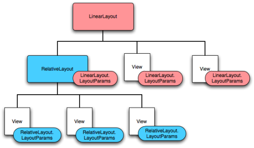
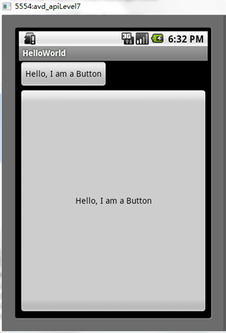
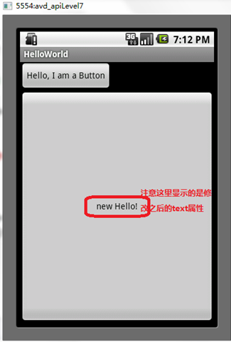
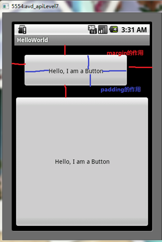

深入分析布局文件&又是“Hello World！”
引言
上篇可以说是一个分水岭，它标志着我们从Android应用程序理论进入实践，我们拿起手术刀对默认的“Hello World！”程序进行了3个手术，我们清楚了“Hello world！”是如何实现显示在屏幕上的，而且我们知道不仅可以根据布局文件main.xml来初始化屏幕，还可编程地进行。以后基本我们都会以实践的方式来深入Android开发。我们这次深入分析Android应用程序的布局文件，主要内容如下：
1、用户界面及视图层次2、Android中布局定义方法
3、编写XML布局文件及加载XML资源
4、常用布局文件中元素的属性
4.1、ID属性
4.2、布局参数
5、布局位置&大小&补距&边距
6、又是“Hello World！”
6.1、又是“Hello World！”（一）
6.2、又是“Hello World！”（二）
6.3、又是“Hello World！”（三）
1、用户界面及视图层次
在通过“Hello World！”介绍Android中的布局问题之前，不得不先介绍一下Android中的用户界面，因为布局问题也是用户界面问题之一。在一个Android应用程序中，用户界面通过View和ViewGroup对象构建。Android中有很多种Views和ViewGroups，他们都继承自View类。View对象是Android平台上表示用户界面的基本单元。
View类：extends Object
implements Drawable.Callback, KeyEvent.Callback, AccessibilityEventSource
这个类表示用户界面组件的基本构建块，一个View占据屏幕上的一个矩形区域，并负责绘图和事件处理。View类是widgets的基类，widgets用于创建交互式UI组件（buttons、text fields等）。View类的直接子类ViewGroup类是layouts的基类，layouts是不可见的容器用户保持其他Views或者其他ViewGroups和定义它们的布局属性。
一个View对象是一个数据结构，它的属性存储屏幕上一个特定矩形区域的布局参数和内容。一个View对象处理它自己的测度、布局、绘图、焦点改变、滚动、键/手势等与屏幕上矩形区域的交互。作为用户界面中的对象，View也是与用户交互的一个点且交互事件接收器。
在Android平台上，你定义活动的UI使用的View和ViewGroup节点的层次结构如下图所示。根据你的需要这个层次树可以是简单的或复杂的，并且你能使用Android预定义的widgets和layouts集合，或者使用自定义的Views。

为了将视图层次树呈现到屏幕上，你的活动必须调用setContentView()方法并且传递到根节点对象的引用。Android系统接收这个引用并使用它来验证、测度、绘制树。层次的根节点要求它的孩子节点绘制它自己——相应地每个试图组节点要求调用自己的孩子视图去绘制他们自己。子视图可能在父视图中请求指定的大小和位置，但是父视图对象有最终决定权（子视图在哪个位置及多大）。因为它们是按序绘制的，如果元素有重叠的地方，重叠部分后面绘制的将在之前绘制的上面。
2、Android中布局定义方法
布局是一个活动中的用户界面的架构，它定义了布局结构且存储所有显示给用户的元素。有两种方式可以声明布局，这个我们在上文中已经用了（对应上文的“Hello World的手术（二）”、“Hello World的手术（三）”）。我们再重温总结一下：
方法一、在XML格式的布局文件中声明UI。Android提供了简易的XML词汇表对应视图类和其子类，诸如widgets和layouts。
方法二、在运行时实例化布局元素。可以编程地创建View和ViewGroup对象，并操作他们的属性。
Android框架给我们灵活地使用这两个方法之一或两个声明和管理你的应用程序的UI。例如，你可以用XML格式的布局文件定义应用程序默认的布局，包括将显示在屏幕的元素和属性。然后你可以编程地修改屏幕上对象的状态，包括定义在XML文件中的元素。
最常用的是方法一，即用一个XML的布局文件定义自己的布局和表达层次视图。XML提供一种直观的布局结构，类似HTML。XML中的每个元素是一个View或者ViewGroup对象（或继承自他们的对象）。View对象是树中的叶子，ViewGroup对象是树中的分支，这点可以从上面的视图层次树中可以看出。
在XML布局文件中声明UI的优点是：使应用程序的界面与控制它行为的代码更好地分离了。UI描述在应用程序代码之外，这意味着你可以修改或调整它而不用修改你的源码并重新编译。例如，你可以为不同的屏幕方向、不同的屏幕大小、不同的语言创建XML布局文件。此外，在XML中声明布局更易地可视化你的UI结构，因此更容易调试问题。
一个元素XML元素的名字对应到一个Java类，因此一个<TextView>元素在你的UI中创建一个TextView，一个<linearLayout>元素创建一个LinearLayout的视图组。当你加载一个布局资源时，Android系统初始化这些运行时对象，对应你的布局中的元素。XML元素的属性对应到一个Java类的方法。
3、编写XML布局文件及加载XML资源
使用Android的XML词汇，我们可以快速地设计UI布局及包含的屏幕元素，就像web页面的HTML。每个布局文件必须包含一个根元素，根元素必须是一个View或ViewGroup对象。一旦你已经定义了根元素，你可以添加额外的layout对象或widgets作为子元素，逐步地构建一个视图层次定义你的布局。例如，下面的XML布局文件使用了纵向的LinearLayout保存一个TextView和一个Button。
<?xml version="1.0" encoding="utf-8"?><LinearLayout xmlns:android="http://schemas.android.com/apk/res/android"
android:layout_width="fill_parent"
android:layout_height="fill_parent"
android:orientation="vertical" >
<TextView android:id="@+id/text"
android:layout_width="wrap_content"
android:layout_height="wrap_content"
android:text="Hello, I am a TextView" />
<Button android:id="@+id/button"
android:layout_width="wrap_content"
android:layout_height="wrap_content"
android:text="Hello, I am a Button" />
</LinearLayout>
布局文件以.xml为扩展名，保存在res/layout/下面，它将会被正确地编译。我们已经定义好了布局文件，那它是怎么被加载的呢？当我们编译应用程序时，每个XML布局文件被编译成一个View资源。我们应该在应用程序代码中加载布局资源，在Activity.onCreate()回调中通过调用setContentView()实现，以R.layout.layout_file_name 形式传递给它布局资源的引用。例如，如果你的XML布局保存为main_layout.xml，你应该这样加载它：
public void onCreate(Bundle savedInstanceState) {
super.onCreate(savedInstanceState);
setContentView.(R.layout.main_layout);
}
活动中的onCreate()回调方法，当你的活动启动时被Android框架调用（详见Android 开发之旅：组件生命周期（一），详细介绍了活动组件的生命周期）。
4、常用布局文件中元素的属性
每个View和ViewGroup对象支持他们自己的各种XML属性。一些属性特定于一个View对象（例如，TextView支持textSize属性），但是这些属性也被继承自这个类的任何View对象继承。一些属性对所有View对象可用，因为他们从根View类继承（诸如id属性）。并且，其他属性被考虑为“布局参数”，这些属性描述特定View对象的特定布局方向，由对象的父ViewGroup对象定义。
4.1、ID属性
每个View对象都有一个关联的ID，来唯一标识它。当应用程序被编译时，这个ID作为一个整数引用。但是ID通常是在布局XML文件中作为字符串分配的，作为元素的id属性。这个XML属性对所有的View对象可用且会经常用到。XML中的ID语法如下：
android:id="@+id/my_button"
字符串前的@符号表示XML解析器应该解析和扩展剩下的ID字符串，并把它作为ID资源。+符号表示这是一个新的资源名字，它必须被创建且加入到我们的资源（R.java文件，R是Resource）。Android框架提供一些其他的ID资源。当引用一个 Android资源ID时，你不需要+符号，但是你必须添加android包名字空间，如下：
android:id="@android:id/empty"
为了创建视图和从应用程序引用他们，通常的模式是：
首先在布局文件中定义一个视图/构件对象并分配一个唯一的ID：
<Button android:id="@+id/my_button"android:layout_width="wrap_content"
android:layout_height="wrap_content"
android:text="@string/my_button_text"/>
然后创建一个视图对象实例并从布局中获取它（典型的是在onCreate()方法中）：
Button myButton = (Button) findViewById(R.id.my_button);
4.2、布局参数
名为layout_something的XML布局属性，为视图定义适合于它所驻留的ViewGroup的布局参数。每个ViewGroup类实现一个扩展自ViewGroup.LayoutParams的嵌套类。这个子类包含为每个子视图定义大小和位置的属性类型，以适合于该视图组。如下图所示，父视图组为每个子视图定义布局参数（包括子视图组）。

注意每个LayoutParams子类有它自己的设置值的语法。每个子元素必须定义适合于它父视图的LayoutParams，虽然它可能也为自己的子视图定义不同LayoutParams。
所有的视图组包括宽带和高度（layout_width和layout_height），并且每个视图要求要定义它们。许多LayoutParams也包括可选的边距和边界。你可以指定宽度和高度的具体值，虽然你可能并不想这样做。更多地你将告诉视图它的大小依据它内容要求或跟父视图组所允许的一样大（分别用wrap_content和fill_parent值）。
5、布局位置&大小&补距&边距
视图的几何形状是一个矩形。视图的位置表示为一个left和top的坐标对，尺寸（dimensions）表示为宽度和高度。位置和尺寸的单位是像素（pixel）。
可以通过调用getLeft()和getTop()检索视图的位置。前者返回视图矩形坐标的left或x，后者返回视图矩形坐标的right或y。这些方法返回相对于与其父视图的相对位置，例如当getLeft()返回20，即认为视图到其直接父视图的左边距离为20像素。
此外，提供了一些额外的方法如getRight()和getButtom()避免不必要的计算。这些方法返回视图坐标的右边距和底边距。例如，调用getRight()等同于下面的计算：getLeft()+getWidth()。
视图的大小（size）也表示为宽度和高度，但跟上面尺寸（dimensions）是区别的。上面的尺寸定义视图想在父视图中占多大，视图的尺寸可以通过getMeasureWidth()和getMeasureHeight()获得。而视图的大小（size）则表示视图在屏幕上的实际大小，他们的值可以跟视图尺寸的不一样，但也不是非得这样。视图的大小可以通过getWidth()和getHeight()获得。
为了估量视图的尺寸，必须考虑它的补距（padding，即视图内容与视图边框的距离）。补距以像素表示视图的left、top、right和bottom部分的空白。补距可以用来按特定数量的像素偏移视图内容。例如，左补距是2将输出内容离左边框2像素。补距可以通过setPadding(int, int, int, int)方法设置和通过getPaddingLeft()、getPaddingRight()、getPaddingTop()、getPaddingBottom()来查询。虽然一个视图可以定义补距，但是它不支持边距（margins）。然而，视图组支持边距。
6、又是“Hello World！”
下面我们通过几个实验来验证和加深上述关于布局文件理解。
6.1、又是“Hello World！”（一）
验证名为layout_something的XML布局属性，用layout_width和layout_height定义Button的宽度和高度，这两个属性也是每个视图对象都必须要声明定义的。验证wrap_content与fill_parent的区别，其实区别从他们的单词组成就可以看出：wrap——包，包裹等而content——内容，则wrap_content表示视图对象的高度/宽度正好包住内容；fill——填充等而parent——父，则fill_parent表示填满父视图。
实验设置为：在布局资源文件中定义两个Button，id分别为button1、button2，button1的宽度和高度属性都是wrap_content，button2的宽度和高度属性都是fill_parent。main.xml文件代码如下：
<?xml version="1.0" encoding="utf-8"?><LinearLayout xmlns:android="http://schemas.android.com/apk/res/android"
android:layout_width="fill_parent"
android:layout_height="fill_parent"
android:orientation="vertical" >
<Button android:id="@+id/button1"
android:layout_width="wrap_content"
android:layout_height="wrap_content"
android:text="Hello, I am a Button" />
<Button android:id="@+id/button2"
android:layout_width="fill_parent"
android:layout_height="fill_parent"
android:text="Hello, I am a Button"
/>
</LinearLayout>
而HelloWorld.java文件代码为：
import android.app.Activity;import android.os.Bundle;
import android.widget.*;//注意：导入此包，或者是android.widget.Button;
public class HelloWorld extends Activity {
private CharSequence text = "new Hello!";
/** Called when the activity is first created. */
@Override
public void onCreate(Bundle savedInstanceState) {
super.onCreate(savedInstanceState);
setContentView(R.layout.main);
}
}
运行可以得到如下图结果：

明显可以看出button1的大小是刚好包住内容“Hello，I am a Button”，而button2的大小则是填满父视图的大小。
6.2、又是“Hello World！”（二）
接下来我们视图对象的通用属性ID及再次验证定义布局的两种方式。（关于ID属性——首先在布局文件中定义一个视图/构件对象并分配一个唯一的ID，然后创建一个视图对象实例并从布局中获取它（典型的是在onCreate()方法中））。
属性实验设置为：基本跟上面一样，但是我们要编程地修改button1的text属性。main.xml布局文件跟上面一样，而主要是HelloWorld.java文件不一样，它的代码如下：
import android.app.Activity;import android.os.Bundle;
//import android.widget.*;
import android.widget.Button;
public class HelloWorld extends Activity {
private CharSequence text = "new Hello!";
/** Called when the activity is first created. */
@Override
public void onCreate(Bundle savedInstanceState) {
super.onCreate(savedInstanceState);
setContentView(R.layout.main);
Button myButton = (Button) findViewById(R.id.button2);
myButton.setText(text);
}
}
上面红色粗体的两行代码就是编程地改变button2的text属性，这体现了Android框架给我们灵活地使用上面两个方法之一或两个声明和管理你的应用程序的UI。运行结果如下图所示:

6.3、又是“Hello World！”（三）
验证视图对象的布局位置&大小&补距，实验设置为：在实验一的基础上在main.xml中修改button1的布局位置、大小、补距等属性。修改后的mian.xml文件如下：
<?xml version="1.0" encoding="utf-8"?>
<LinearLayout xmlns:android="http://schemas.android.com/apk/res/android"
android:layout_width="fill_parent"
android:layout_height="fill_parent"
android:orientation="vertical" >
<Button android:id="@+id/button1"
android:layout_width="wrap_content"
android:layout_height="wrap_content"
android:text="Hello, I am a Button"
android:width="250dp"
android:height="80dp"
android:padding="20dp"
android:layout_margin="20dp"
/>
<Button android:id="@+id/button2"
android:layout_width="fill_parent"
android:layout_height="fill_parent"
android:text="Hello, I am a Button"
/>
</LinearLayout>
运行后结果如下所示：

NOTE：上述代码中布局位置&大小&补距的单位（如width="250dp"）。单位可以为px、in、mm、pt、dp、sp。
px：pixels（像素）——对应屏幕上实际的像素in：inches（英寸）——基于物理屏幕的大小
mm：millimeters（毫米）——基于物理屏幕的大小
pt：points（点）——英寸的1/72，基于基于物理屏幕的大小
dp：density-independent pixels（独立于密度的像素）——一个抽象的基于物理屏幕密度的单位。这些单位是相对于一个160dpi的屏幕，所有一个dp是160dpi屏幕上的一个点。dp到px的转换比率根据屏幕密度改变，但不一定是成正比。
sp：scale-independent pixels（规模独立像素）——类似于dp单位，但是它也受用户字体大小设置的影响。当你指定字体大小时使用它，因为他们将根据屏幕和用户设置调整。